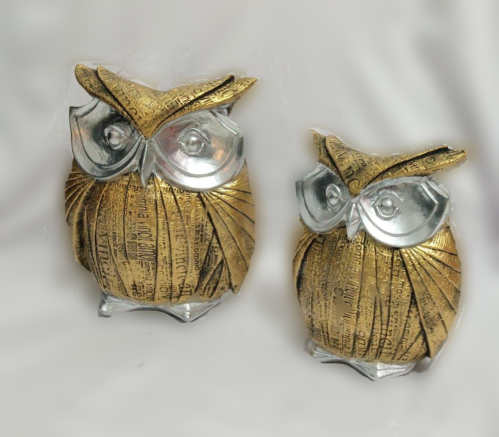

HISTORIA DE LA EMPRESA
Su fundacion se dio en el año 1995. Su fundador fue Carlos Rolando Triviño Rubiano, el cual inicio con figuras muy pequeñas ya que no tenia el conocimiento para figuras mas grandes. Años mas tarde ya tuvo el conocimiento para iniciar figuras mas grandes en compañia de su familia y asi lograr fomentar empleo por medio de la micro empresa. Hasta la fecha se ha logrado crear mas de 400 figuras en yeso en gran variedad de tamaños.
